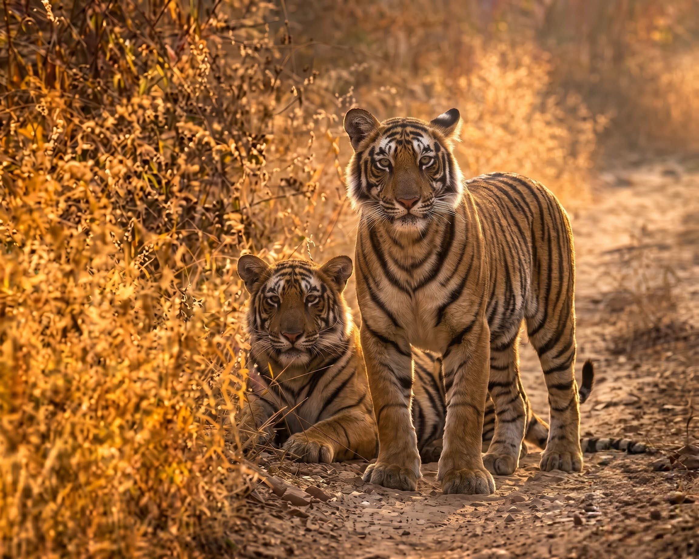

The Royal Bengal Tiger (Panthera tigris tigris) is not merely India’s national animal; it is the ultimate keystone species and apex predator holding the structural integrity of the subcontinent's ecological web together. But why royal bengal tiger is the national animal of india? It was adopted in 1973 due to its incredible grace, strength, agility, and immense power, replacing the lion, coinciding with the launch of 'Project Tiger'. Harboring approximately 75% of the global wild tiger population, India serves as the final, most vital stronghold for this endangered carnivore. For international wildlife biologists, conservationists, and serious eco-tourists, understanding the Bengal tiger requires looking far beyond its striking aesthetic.
This comprehensive, highly analytical guide explores the granular details of tiger ecology. We dissect their evolutionary bottlenecks, the sophisticated telemetry used by the National Tiger Conservation Authority (NTCA) for population census, the biophysics of their hunting mechanics, and the intricate "Tiger-nomics" driving modern conservation. Whether you are a researcher studying trophic cascades or an international traveler planning a high-end photographic safari, this constitutes the definitive resource on India's greatest predator.
1. Evolutionary Origins & Genetic Bottlenecks
To understand the modern Royal Bengal Tiger, one must trace its phylogenetic roots. Paleontological evidence and advanced mitochondrial DNA sequencing indicate that the modern tiger species evolved in East Asia. The ancestors of Panthera tigris tigris migrated into the Indian subcontinent roughly 12,000 to 16,000 years ago, during the late Pleistocene epoch. This relatively recent colonization explains the tiger's lack of adaptation to extreme heat compared to native Indian species like the leopard or the Asiatic lion.
Today, geneticists focus heavily on the concept of "genetic bottlenecks." Due to habitat fragmentation, isolated populations (such as those in Ranthambore or Simlipal) face the risk of inbreeding depression. The Wildlife Institute of India (WII) actively maps the genome of wild populations to ensure high heterozygosity. Conservationists are prioritizing the protection of terrestrial corridors—like the critical Kanha-Pench corridor—to facilitate genetic exchange between metapopulations.
2. The Biophysics of an Apex Predator
The physiological engineering of the Bengal tiger is optimized for explosive kinetic energy rather than stamina. As an ambush predator, its anatomy is a study in biomechanical efficiency, designed to deliver immediate, lethal force to large ungulates like Sambar deer and Gaur (Indian Bison).
Bite Force Quotient (BFQ) and Cranial Morphology
A tiger’s skull is heavily reinforced with a pronounced sagittal crest, anchoring massive temporalis muscles. This allows the Bengal tiger to deliver a Bite Force Quotient (BFQ) of approximately 127 (around 1,050 PSI). Their canines, loaded with nerve endings, act as sensory organs, allowing the tiger to feel exactly where to slip the tooth between the cervical vertebrae of its prey to sever the spinal cord instantly.
Olfactory Communication and the Flehmen Response
Because tigers operate in dense, low-visibility environments, chemical communication supersedes visual cues. Tigers rely heavily on the Flehmen response—curling back their upper lips to expose the vomeronasal organ (Jacobson's organ) located behind the palate. This allows them to effectively "taste" the air, decoding the reproductive status of females or the territorial dominance of rival males from scent marks left days prior.
| Anatomical Adaptation | Ecological Function & Biophysical Advantage |
|---|---|
| Tapetum Lucidum | A retroreflector tissue layer behind the retina that bounces visible light back through the photoreceptors, increasing night vision capability by 600% relative to humans. |
| Vibrissae (Whiskers) | Highly innervated sensory hairs that can detect minute shifts in air pressure and wind direction, aiding navigation and bite placement in total darkness. |
| Digitigrade Locomotion | Walking solely on their toes allows for elongated strides and silent movement, distributing a 250kg mass with near-zero acoustic footprint on dry leaf litter. |
| Disruptive Coloration | The eumelanin-pigmented stripes act as evolutionary camouflage, breaking the animal's continuous visual outline against vertical forest flora (tall grasses/trees). |
3. Landscape Ecology: The Four Primary Tiger Habitats
India’s biodiversity affords the Bengal tiger highly diverse ecological niches. Understanding these macro-landscapes is essential for studying their adaptability and for tourists selecting a safari destination.
The Central Indian Landscape & Eastern Ghats
This is the genetic heartland of the global tiger population. Dominated by moist deciduous and dry deciduous forests featuring Shorea robusta (Sal) and Tectona grandis (Teak), reserves like Kanha, Bandhavgarh, and Pench boast the highest prey biomass in the country. The high concentration of Chital (Spotted Deer) sustains a dense predator population.
The Shivalik Hills and Terai Arc Landscape (TAL)
Running parallel to the Himalayas, the TAL features alluvial grasslands and dense swamps. Parks like Corbett and Dudhwa lie here. The tall elephant grass provides exceptional cover. Tigers in this region are noted for being physically larger, a biological necessity to hunt massive prey like the Nilgai and, occasionally, sub-adult wild Asian elephants.
The Sundarbans Mangroves
A completely unique estuarine ecosystem shared between India and Bangladesh. Here, tigers exhibit hyper-adaptations. They are semi-aquatic, swimming kilometers across tidal rivers. Scientists are studying their unique osmoregulation, as these tigers sustain themselves on highly saline water and a unique diet including mud crabs, fish, and water monitor lizards. They are famously more aggressive, a trait likely linked to the harsh, high-stress environment.
The Western Ghats Complex
Characterized by rugged mountainous terrain and tropical evergreen rainforests. Reserves like Bandipur, Nagarhole, and Mudumalai exist here. The dense, dark undergrowth requires immense stealth, and the region hosts a robust metapopulation seamlessly connected across state borders.
4. Modern Population Dynamics & SECR Census Methodology
In 2006, India abandoned the flawed, unscientific "pugmark tracking" census method. Today, the NTCA, in collaboration with the WII, executes the largest biodiversity survey in the world. The cornerstone of this operation is the Spatially Explicit Capture-Recapture (SECR) model.
How it works: The country is divided into grids. Over 30,000 motion-sensor camera traps are deployed across thousands of square kilometers. When a tiger passes, the camera captures both flanks. Because every tiger's stripe pattern is mathematically unique (like a barcode), artificial intelligence software called CaTRAT (Camera Trap Data Repository and Analysis Tool) processes millions of images to identify individual tigers.
Simultaneously, forest guards use the M-STrIPES mobile application to record geospatial data of direct sightings, scat, prey density, and signs of human disturbance. This dual-pronged approach provides highly accurate population estimates. As of the latest comprehensive cycle, India's tiger population sits robustly above 3,100 individuals, a monumental victory considering the species was on the brink of extinction in the late 1990s.
How many Royal Bengal Tigers in India? (Real Data Trends)
A common question among wildlife enthusiasts is regarding year-wise tiger population data (such as 2021, 2022, or 2024). It is important to know that the National Tiger Conservation Authority (NTCA) conducts a comprehensive official census only once every four years. Below is the authentic 4-year cycle data representing the steady growth of India's tiger population:
| Census Year | Official Tiger Population | Growth & Remarks |
|---|---|---|
| 2014 | 2,226 | A significant 30% jump from the 2010 census (1,706 tigers). |
| 2018 | 2,967 | India achieved its St. Petersburg declaration target of doubling tiger numbers 4 years ahead of schedule. |
| 2022 | 3,682 | Initial figures (3,167) were later revised to 3,682 in the final comprehensive report. This data is actively referenced for queries relating to 2023 and 2024. |
| 2026 | Census Active | The latest 4-year cycle all-India tiger estimation is currently underway. |
5. Human-Wildlife Conflict (HWC) & Conservation Economics
The primary threat to the Bengal tiger is no longer organized sport hunting, but extreme habitat fragmentation and Human-Wildlife Conflict (HWC). As tiger populations rebound, they spill out of protected core zones into agricultural buffers, leading to livestock depredation and human casualties.
To ensure local communities view the tiger as an asset rather than a liability, the concept of Tiger-nomics has been deployed. High-end eco-tourism generates massive revenue. A single wild tiger, over its lifespan, is estimated to generate millions of dollars in tourism revenue. A portion of gate receipts from national parks is heavily reinvested into local village development, providing alternative livelihoods (like training locals as safari naturalists) to reduce dependency on forest resources.
6. The International Traveler's Expert Safari Guide
For international photographers and wildlife enthusiasts, a tiger safari in India is the pinnacle of global eco-tourism. Navigating the logistics, however, requires strategic planning due to strict carrying-capacity regulations imposed by the Supreme Court of India.
Optimal Photography Gear
Because off-roading is strictly prohibited in Indian Tiger Reserves, tigers can range from 10 feet away to 300 feet away across a meadow. The ideal photographic setup includes a fast full-frame DSLR/Mirrorless body paired with a telephoto zoom (e.g., 100-400mm or 200-600mm). A wide aperture (f/2.8 to f/4) is critical, as tiger movement often peaks during the low-light hours of early dawn and late dusk.
The Top Reserves for Maximum Sighting Probability
- Tadoba Andhari Tiger Reserve (Maharashtra): Known as the "Jewel of Vidarbha." It is a dry, teak-dominated forest with extreme summer heat, which forces tigers to man-made saucers and lakes, guaranteeing high-frequency sightings.
- Bandhavgarh National Park (Madhya Pradesh): Historically the hunting ground of the Maharajas of Rewa. It possesses one of the highest tiger densities per square kilometer. The Tala and Magdhi zones are globally renowned for spectacular tiger photography.
- Ranthambore National Park (Rajasthan): The quintessential Indian wildlife landscape. Tigers are frequently photographed walking past 10th-century ruins and ancient banyan trees. Zone 3 (the lake zone) offers iconic backdrops.
- Corbett Tiger Reserve (Uttarakhand): For those prioritizing holistic wilderness over guaranteed tiger sightings. The Dhikala zone offers a raw, sub-Himalayan aesthetic, though the dense vegetation makes spotting the elusive cat a true test of a tracker's skill.
7. Frequently Asked Questions (Technical)
What is the difference between a core zone and a buffer zone?
Under the Wildlife Protection Act (1972) and NTCA guidelines, a "Core Zone" is a strictly protected area designated for the absolute conservation of wildlife, where all human activities (except regulated tourism) are banned. A "Buffer Zone" surrounds the core, allowing co-existence, sustainable forestry, and human settlements, acting as a shock absorber for the protected interior.
Do Bengal tigers exhibit melanism or albinism?
Yes. The famous "White Tigers" are not albinos but leucistic Bengal tigers, caused by a recessive gene (SLC45A2) that inhibits red/yellow pigmentation. Additionally, the Simlipal Tiger Reserve in Odisha is uniquely famous for pseudo-melanistic tigers, characterized by abnormally thick, merged black stripes, a result of localized genetic inbreeding.
What is a 'Trophic Cascade', and how do tigers trigger it?
As apex predators, tigers regulate the population of large herbivores. Without tigers, herbivores like Chital and Nilgai would overpopulate, leading to severe overgrazing. This overgrazing would destroy the forest understory, soil integrity, and water retention, ultimately collapsing the entire ecosystem. Thus, protecting the tiger inadvertently protects the entire hydrological and ecological balance of the forest.